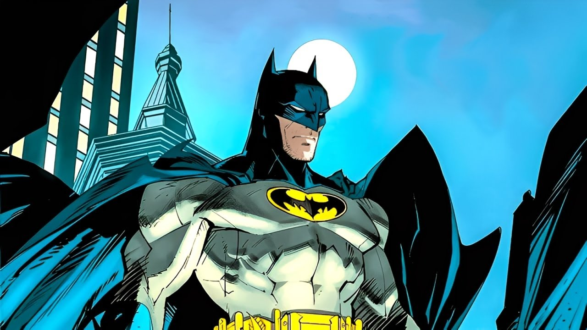

Ночь Бэтмена
Тёмный рыцарь Готэма — это не просто человек в костюме; это символ, рождённый из тьмы, чтобы вселить страх в сердца преступников. Его истинная сила заключается не в сверхспособностях, а в несгибаемой воле, гениальном интеллекте и железной дисциплине. Он — тень, которая наблюдает, и гроза, которая обрушивается на виновных.

Бэтмен патрулирует улицы Готэма, используя передовые технологии и боевые искусства, отточенные до совершенства. Его Бэтмобиль — это не просто автомобиль, а танк на колёсах, а Бэтпещера под поместьем Уэйнов служит штаб-квартирой, наполненной компьютерами и арсеналом. Каждую ночь он выходит на охоту, защищая город от хаоса, который сеют его многочисленные враги.
Стоимость гаджетов
| Устройство | Ориентировочная стоимость | Статус |
|---|---|---|
| Бэтаранг | 850$ за штуку | В производстве |
| Бэткостюм (версия 7.4) | ~1.2 млн.$ | Активен |
| Граппель | 25 000$ | В производстве |
| Бэтмобиль (Текущая модель) | ~18 млн.$ | В единственном экземпляре |
Страх как оружие
Бэтмен использует страх как главный инструмент. Он стал легендой, мифом, который шепчут в подворотнях. Преступники боятся не человека, а символа — летучей мыши, возникающей из темноты. Его методы непреклонны, а моральный кодекс, запрещающий убивать, делает его одной из самых противоречивых фигур в истории Готэма, но именно это отличает его от тех, с кем он сражается.
Призыв к действию

Когда комиссар Гордон направляет луч cигнала Бэтмена в ночное небо Готэма, это означает только одно: городу нужна помощь. Этот символ — надежда для невинных и предостережение для виновных. Он — знак того, что справедливость не спит, что за каждым преступлением последует возмездие.
Работа Тёмного Рыцаря никогда не бывает завершена. Пока в Готэме есть коррупция и несправедливость, он будет защищать его. Его миссия — это не месть, а обязанность, клятва, данная мальчиком упавшим родителям. Он — бдение, длящееся всю жизнь. Он — Бэтмен.